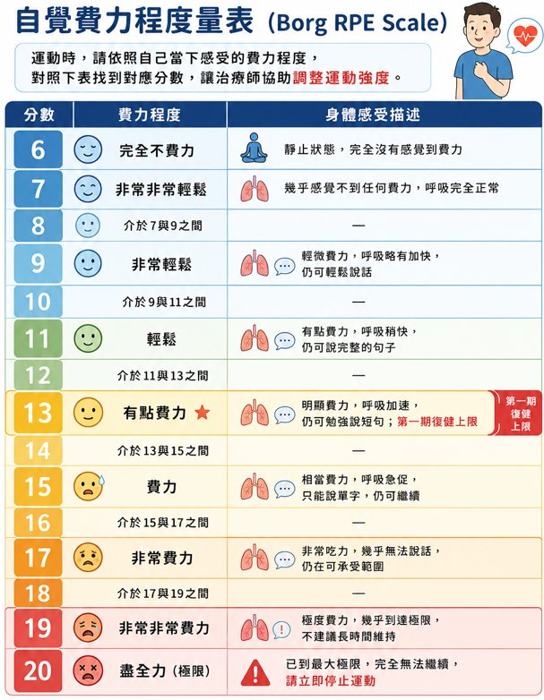

物理治療：心臟復健與運動訓練
什麼是心臟復健？心臟復健是一套多面向的治療計畫，主要包含運動訓練、健康教育及心理支持，幫助心血管疾病患者恢復體力、改善心肺功能，並降低再住院與急性發作的風險。
為什麼需要心臟復健？多項國際大型研究證實，規律參與心臟復健有助於：提升運動能力、運動表現與生活品質；降低再住院率、心血管事件發生率與死亡率；提供心理支持，減少焦慮與憂鬱。資料來源Thygesen et al. (2022). European Heart Journal — Quality of Care and Clinical Outcomes, 8(8), 830–839.
心肺復健三期簡介與運動內容
第一期（住院期復健，Phase I）
- 時間點
- 住院期間至出院後 4～6 週。
- 目標
- 預防臥床引起的併發症，幫助患者恢復基本活動能力。
- 內容
- 病床活動、床邊坐起、短距離步行；呼吸訓練（腹式呼吸、呼吸控制技巧），術後患者另加圜唇呼吸與咳嗽訓練（由治療師評估）；教導日常生活活動注意事項（如上下樓梯、穿衣）。
- 運動強度
- 輕到中度（RPE ≤ 13），心率控制於靜止心率 +≤20 bpm；以不誘發症狀為原則。
第二期（出院後門診復健，Phase II）
- 時間點
- 出院後 4～6 週開始，持續 3～6 個月。
- 目標
- 安全地提升體能、改善心肺耐力，降低病情惡化與再住院風險。
- 內容
- 監控下的有氧運動（腳踏車、跑步機）；漸進式肌力訓練；柔軟度訓練；生活型態調整（低鹽飲食、壓力管理）；每次運動前後監測體溫與血壓；體重與下肢水腫自我監測教育。
- 運動強度
- 中到高強度，心率目標 40～70% 心率儲備（HRR）；RPE 目標 11～14（起始 11～12，穩定後漸進至 12～14）。
第三期（長期維持期，Phase III）
- 時間點
- 第二期結束後（通常 6 個月後），進入長期自我管理。
- 目標
- 維持心肺功能、建立終身運動習慣。
- 內容
- 有氧運動（快走、騎車、游泳）每週 3～5 次，每次 30～60 分鐘；結合阻力訓練與柔軟度訓練。
- 運動強度
- 同第二期，依個人耐受調整；RPE 約 12～14。
心肺復健的好處
- 降低急性心衰竭再發作與猝死風險；
- 改善心肺功能與生活品質；
- 提升運動耐力與日常活動能力；
- 促進心理健康，減少焦慮與憂鬱；
- 幫助控制體重、血壓、血糖與血脂。
運動安全警訊：何時應降低強度或停止？
運動雖有益，但「安全」永遠擺第一。如有以下任一症狀，請立刻降低運動強度或停止運動，並聯繫醫療人員：
- 胸部不適：胸悶、胸痛或壓迫感（可能放射至手臂）。
- 頭部症狀：頭暈、冒冷汗、昏眩、噁心或心悸。
- 呼吸與心跳：異常呼吸困難（比平常更喘）、心律不整感。
- 異常疲勞：運動後極度疲倦且久久無法恢復。
- 血壓異常：運動後血壓過高或過低。
- 體重急遽增加：24 小時內增加 1 kg 以上，或 3 天內增加 2 kg 以上，請暫停運動並回診。
自覺費力程度量表（Borg RPE Scale）
「自覺費力程度（RPE）」是讓您用主觀感受評估運動強度的工具，分數由 6（完全不費力）到 20（最大努力）。心臟復健常以RPE 11～14（有點吃力但仍可交談）作為安全運動的目標區間。臨床小提醒運動時若無法輕鬆說出完整句子，代表強度可能偏高，應適度放慢。
